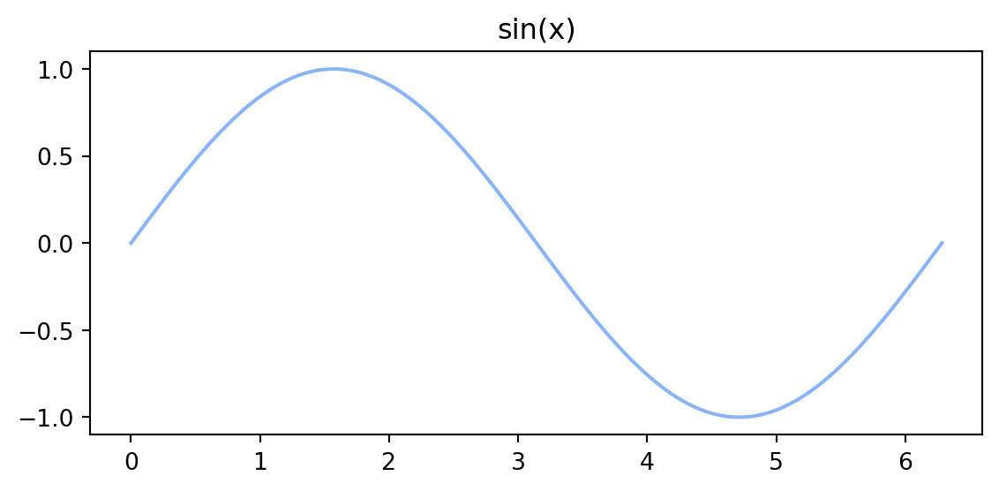

👉 Click here to reveal the Python code
import math
radius = 5
area = math.pi * (radius ** 2)
print(f"The area of the circle is {area:.2f}")The area of the circle is 78.54This file demonstrates the three primary ways to create collapsible folds inside a Quarto document.
Below is a Python code chunk that is folded by default.
import math
radius = 5
area = math.pi * (radius ** 2)
print(f"The area of the circle is {area:.2f}")The area of the circle is 78.54Quarto callouts can be made collapsible with collapse="true". They start folded and expand on click.
This content is hidden until you click the title. Callouts support full Markdown inside them, including lists and code:
print("Even code blocks work inside a collapsed callout")Use collapse="false" (the default for some types) to have them open initially.
<details> FoldFor arbitrary collapsible content, drop straight into HTML. This works in any HTML output and is the most flexible option.
This block is a native browser <details> element. You can put any Markdown or HTML here — tables, images, math, etc.
| Column A | Column B |
|---|---|
| 1 | 2 |
| 3 | 4 |
A standard Markdown image pulled from the web, with a caption and sizing:

The code that produces this plot is folded; only the resulting image shows by default.
import numpy as np
import matplotlib.pyplot as plt
x = np.linspace(0, 2 * np.pi, 200)
y = np.sin(x)
plt.figure(figsize=(6, 3))
plt.plot(x, y, color="#89b4fa")
plt.title("sin(x)")
plt.tight_layout()
plt.show()
The previous folds only collapse a block. To fold a whole section — its heading and every paragraph, list, code chunk and image under it — wrap the section in a raw <details> element and put the heading text in the <summary>.
Everything between the <summary> and the closing </details> is hidden until you click, including subheadings:
Full Markdown still works in here:
print("A code block living inside a folded section")And even images:
open attribute)
Add open to the <details> tag to have a section rendered expanded by default, while still letting the reader collapse it.